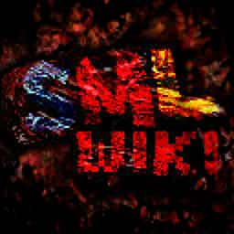

As of August 2024, the future of SMLWiki is bleak. The odds were stacked against the 'site since the very start, but today, life came crashing down on me. Without going into detail, I have very little hope left for the future and can't afford for this website anymore. If you're interested in buying the domain off of me, you can find my contact here. I likely have to sell my equipment which effectively ends the website regarldess. I will still try & continue to keep the 'site in-tact for as long as I possibly can, and if you're able to help out financially and want to help preserve my work online, please donate to my Ko-fi or buy some music from my Bandcamp. If everyone who read this donated just $1, I would have about $* to aid my situation and pay for SMLWiki. Thank you for reading. 𓆩✧𓆪